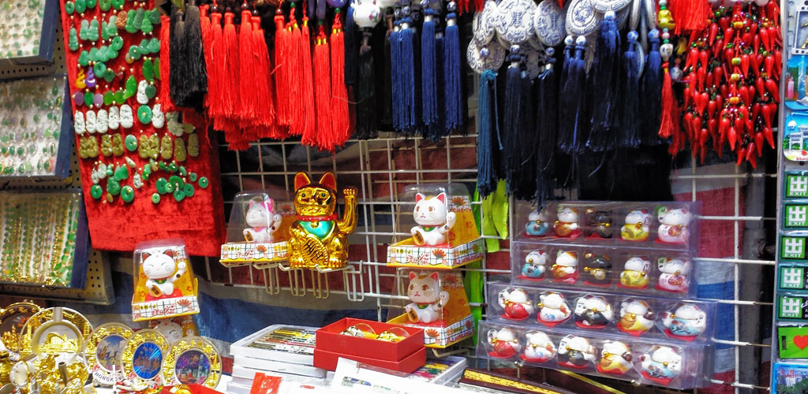
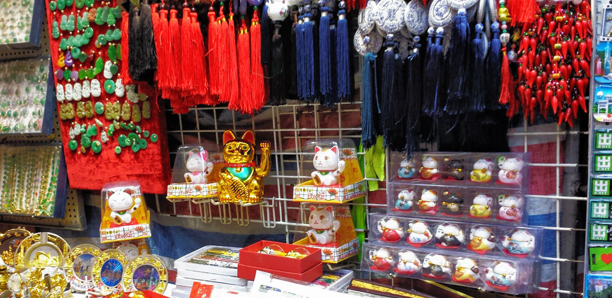

How to Get There
How you get to the Mongkok Ladies Market of course depends on where you are coming from, having just been shopping or from your hotel perhaps. Being in the city centre it is well provided with different means of transport. Anywhere close by and walking is probably the best but if you are coming from more distance than walking permits, or if you just don't like walking then there are plenty of ways of using public transport to get to the market.
Here are some common routes:
How to get to Ladies' Market from:
| From | Route | Notes | Advertisements |
| Star Ferry, Tsim Sha Tsui, Kowloon side |
|
|
|
| Any MTR stations | Uses the MTR and go to Mong Kok station (not Mong Kok East). Take the E2 exit and walk along Nathan Road towards Shan Tung Street | A bit of walking but simple. | |
| Central |
|
|
|
| Wanchai |
|
|
|
| Causeway Bay | MTR or Bus | ||
| Other | HK Gov route finder | It is a bit clumsy but this tool does know all about public transport in Hong Kong |
| When leaving the Mongkok MTR station take the
Bank Centre Exit:
When you come out at ground level you need to walk forward half a block then you are in the middle of Ladies Market which is running left and right from where you are standing. |
Advertisements |